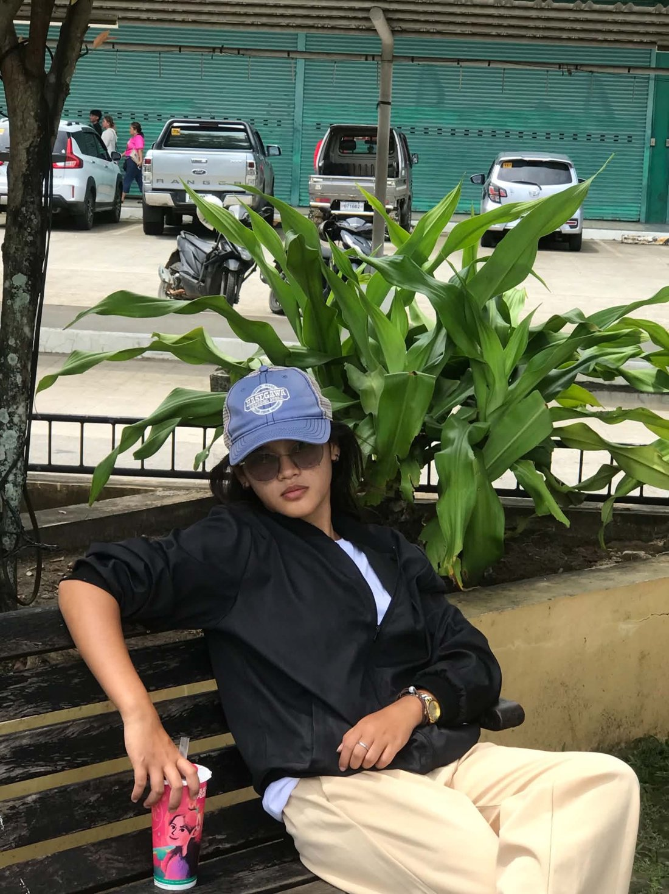

Break it down
Big problems become small steps I can actually finish.

ABOUT ME
I’m an Information Technology student from Negros Oriental. I like understanding how a system fits together before I build on top of it.
I’m taking a BSIT degree at Negros Oriental State University. Before that, I studied Accountancy, Business, and Management at Southern Tech College, then moved into Information Technology in 2024.
I want to join a team where I can contribute early, learn from experienced people, and grow into a reliable web developer.
Information Technology student at Negros Oriental State University.
I moved from business studies into IT in 2024.
Curious about web design, networks and animation.
I learn fastest by making something, breaking it, then fixing it properly.
First version works. Second is clean. Third is fast.
Based in Negros Oriental, Philippines.
Big problems become small steps I can actually finish.
First version works. Second version is clean. Third is fast.
Honest feedback and teamwork make everyone faster.